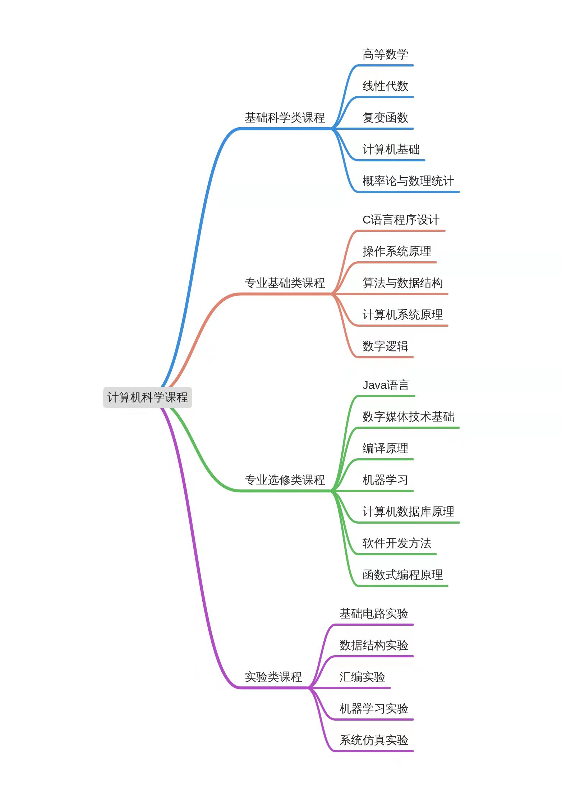

计算机学科是让人沉迷的学科，从原始的代码到构建起宏伟的网络蓝图，实现人类社会的时代性的跨越，计算机发挥了最大的作用。计算机学科是许多学生的梦想，不只是看中了高额的薪水，也因为对网络世界的着迷。正因为计算机不仅在传统领域表现出色，在新兴领域也起着重要作用，使得我们的就业前景变得非常广阔。IT行业仍然需要大量的具有专业知识的人才，加之我国正处于高速发展时期，社会对于计算机人才的需求依然强烈。而对于本人来说，计算机是我学习方向与理想，是我接触未知世界的途径，计算机学科充满了创新和挑战。在不断了解计算机专业的过程中，我注意到当今信息产业迎来了发展的黄金时期，大数据技术、云计算等新兴技术应运而生。云计算是分布式计算技术的一种，其最基本的概念，是透过网络将庞大的计算处理程序自动分拆成无数个较小的子程序，再交由多部服务器所组成的庞大系统经搜寻、计算分析之后将处理结果回传给用户。透过这项技术，网络服务提供者可以在数秒之内，达成处理数以千万计甚至亿计的信息，达到和“超级计算机”同样强大效能的网络服务。从云计算还衍生出云物联应用、云安全、云储存应用、云呼叫应用、云教育应用等相关应用。可以看出，云计算在未来具有广阔的发展前景。因此我对云计算非常着迷，如果进入计算机方向的研究，我会从事云计算方面的研究。